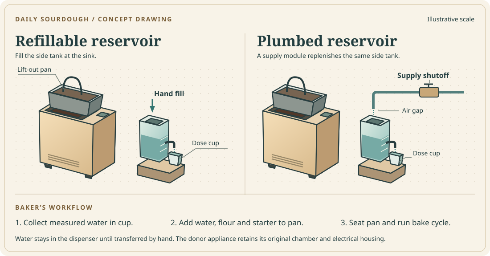

Requests for proposals · Project 01 · November 2026
Daily sourdough at home
Can a young household with a small kitchen and an unpredictable work schedule afford fresh bread, make it reliably, and still learn how to bake it by hand?
Our RFP series invites Pennsylvanians to turn a household expense into a practical design problem. For bread, the obstacles include the purchase price of equipment, time between shifts, counter space in a rental, and flour lost when a batch fails. We welcome independent bakers, student teams, machinists and automation researchers who can show which obstacle their design removes and how much that improvement costs.
Other open RFPs: Household battery buffering, a battery that carries a Pennsylvania home through outages and peak hours.
The household prototype

Feed the starter separately. Weigh flour, ripe starter, salt and water into the removable pan. The stock machine handles mixing, timed rises and baking. The baker checks dough rise and adjusts timing between trials. Start with 450 g flour, 100 g ripe starter at equal flour and water weights, 300 g water and 10 g salt: 860 g of dough, targeting a 750 g cooled loaf. Measure bake loss and tune the program for the flour and room temperature.
Counter space and power
The stock baking core measures 18 W × 10½ D × 12⅞ H inches with the lid closed. Reserve an open work area for lifting the lid and removing the pan. Confirm the lid sweep, steam clearance and water-module fit with a full-size mockup before installation.
One US 120 V, 60 Hz outlet on a 15 A circuit for the entire unit. The manufacturer rates the baking core at 700 W, equivalent to about 5.8 A at nominal voltage. The water module is passive. Commissioning requires logging peak current during motor start and heating, verifying the complete unit stays within 15 A and measuring actual kWh per batch. Use the appliance according to its manufacturer’s manual.
Space allowance for both versions: plan on 30 W × 24 D inches of counter (5 sq ft) with 28 inches of clear working height as a provisional layout target. This allows for the baking core, a roughly 5 × 18 inch dispenser station and room for the cup. A full 1.25-gallon tank adds about 10.4 lb of water. The plumbed version also needs accessible space for shutoff, tubing and an approved overflow route. Final clearances depend on the installed fittings and lid travel.
Prototype cost comparison
Reservoir: $507.96 in equipment, $1.66 per usable loaf. Plumbed: $994.03 installed, $2.00 per usable loaf. The plumbed unit saves trips to refill the tank. Dosing the water and loading the pan still take the same work.
At eight minutes of household time per attempt valued at $15/hour, the totals become $3.77 and $4.11. These scenarios assume 300 attempts a year for five years, 95% usable yield and $30 annual upkeep. Per attempt: $0.80 flour, $0.04 salt and other ingredients, $0.06 water and cleaning, and $0.24 electricity (1.2 kWh at $0.20/kWh). Retail parts and allowances exclude sales tax, shipping and prototype engineering labor. Neither design meets the $300 purchase-price target at these single-unit prices.
Parts, quantities and price sources · November 2026
Retail prices were recorded in November 2026, but the day each price was checked was not recorded. Treat them as unverified estimates and confirm the current price at each linked reference before ordering.
Shared core and reservoir · one each
- Zojirushi Home Bakery Virtuoso Plus BB-PDC20 · $454.99
- One complete stock appliance includes removable nonstick pan, dual kneading blades, drive, lid and base heaters, temperature controls and three customizable knead/rise/bake memories. Manufacturer rating: 120 V, 700 W, 18 × 10.5 × 12.875 inches; nominal 2 lb loaf. Run unmodified. Actual energy and naturally leavened timing require trials. Price reference
- 1.25 US gal gravity reservoir with manual spigot · $7.97
- Retail single-unit reference. Fill at the sink; remove for cleaning. Check local stock. Price reference
- Stable raised tank cradle, removable spill tray and measuring cup · $25.00
- Fabrication allowance. Gravity fills a cup; operator weighs and transfers water into the pan. Allow about 5 × 18 inches of counter space for this sidecar, pending physical fit checks.
- Battery kitchen scale and lidded starter jar · $20.00
- Planning allowance for one set. The scale adds no outlet load.
Added for the plumbed model · one each
- BrassCraft 72-inch ice-maker connector · $16.07
- Retail, 1 × B0-72IM P. A plumber must confirm existing fitting compatibility. Price reference
- Manual isolation valve and potable-water fittings · $35.00
- Allowance, one set.
- Potable-water mechanical fill valve with float · $45.00
- Allowance for a pressure-rated float valve on an independent fill assembly.
- Air-gap fill assembly with overflow provision · $65.00
- Allowance for one assembly. Fill the unpressurized tank across an air gap. Installer must verify local backflow and drainage requirements.
- Mechanical overflow isolation and leak-triggered supply shutoff · $75.00
- Allowance for independent, non-mains-powered protection. Require a plumber-approved assembly, tested overflow path and independent leak shutoff before commissioning.
- Site installation and commissioning · $250.00
- Budget allowance, not a contractor quote. Assumes accessible cold water and approved drain route; excludes construction and permits.
Open the full-size drawing · Change the cost assumptions

A steam-optimized microbakery would have its own capacity, premises and utility brief. The prices and trial on this page apply to one household loaf per cycle.
What to design
Deliver a reproducible design for one approximately 750 g finished loaf on a household-selected schedule. Start with flour, potable water, salt and an active starter. Show who feeds the starter, weighs ingredients, mixes, judges fermentation, shapes, bakes, cools and cleans. A useful first prototype may automate only the steps that force someone to be home at a particular hour.
- Reservoir model. A renter can set it on a counter, fill a removable tank at the sink and empty it for washing. Specify its footprint, full weight, capacity, refill interval and electrical requirements.
- Optional plumbed model. Reuse the same baking mechanism. Quote installation separately and document water isolation, backflow protection, leak detection, automatic shutoff, stagnation control and local installation requirements. Compare the time saved with the cost and risk of a permanent connection.
- Control and repair. Supply dimensioned CAD, an exploded assembly, wiring and water diagrams, firmware, a bill of materials with dated quotes, and a manual-bake mode. Show how food-contact parts come apart and how a user safely recovers from a power cut or a missed feeding.
Use Pennsylvania’s robotics expertise as a resource. A strong university project might compare a low-cost temperature probe and a baker’s visual check against a camera measuring dough rise. Price both methods and show whether the extra sensor improves the percentage of successful loaves. Carnegie Mellon’s Robotics Institute is a potential audience for this invitation. Participation would require a separate agreement.
Price and work targets
Test a $300 household purchase-price target for the reservoir version. Quote the prototype and production runs of 100 and 1,000 separately, including assembly, testing, warranty and distribution. Show a lower-cost alternative using a household oven. A proposal above target can still be useful if it shows the cost driver and what users gain.
As a planning scenario, allow two weeks for baker interviews and design, four for bench assembly and iteration, and four for household trials. Quote engineering hours, hourly rates, parts, test equipment and outside services by stage. Include a hand-mixed loaf baked in an ordinary oven as the comparison.
What a prototype must demonstrate
Run 30 scheduled batches across at least three households. Define an acceptable loaf with the participating bakers before testing. Aim for 27 acceptable loaves and no more than 10 minutes of median hands-on time per batch, including feeding and cleanup. Log every attempt, finished weight, missed bake time, waste, water, wall-meter kWh and minutes of work. Report the longest cleanup as well as the median.
Record electrical demand against the oven baseline and identify the energy source if claiming renewable operation. Document heat, pinch, flour-dust, water and electrical hazards before a home trial. Include a cleaning inspection and a supervised demonstration of empty-tank, stuck-valve and power-loss behavior as applicable.
What does a day’s portion of bread provide?
For someone eating 150 g over the course of a day (one fifth of the modeled loaf), the ingredient estimate is 361 calories, 12 g protein and 2.4 g fiber. That supplies about 18% of a 2,000-calorie reference day. Its iron contribution is substantial, while fiber is more modest and the salt adds up. Beans or lentil soup alongside the bread can contribute additional protein and fiber.
| Nutrient | Amount | Daily reference share |
|---|---|---|
| Energy | 361 kcal | 18% of 2,000 kcal |
| Protein | 12.0 g | 24% of 50 g |
| Fiber | 2.4 g | 9% of 28 g |
| Iron | 4.41 mg | 25% of 18 mg |
| Sodium | about 790 mg | 34% of 2,300 mg |
The 750 g loaf contains 500 g of flour (including the flour in the starter) and 10 g of salt. A 150 g portion therefore contains the inputs from 100 g of flour and 2 g of salt. For a 75 g portion, halve the figures. We used USDA’s generic enriched white bread flour as a proxy for the Costco product. Fermentation, bake yield, flour choice and uneven slice weights affect the finished serving. FDA label reference values provide a common comparison; individual needs vary. There is no single percentage for “all nutrients.”
USDA flour nutrient record · FDA Daily Values
Costco bulk flour: about 12 cents per daily portion
Price example checked November 24, 2026: Costco Business Center lists a 50 lb bag of Ardent Mills Harvest enriched bread flour. An Instacart listing showed $24.87 for that size. This is a delivery-marketplace example; your Pennsylvania warehouse or delivered price may differ. At 22.68 kg per bag, flour costs $1.10/kg, or about $0.55 for one loaf. Add the model’s $0.04 salt allowance and the ingredient subtotal is $0.59 per loaf, or $0.12 per 150 g portion. Allowing for 95% successful batches gives about $0.62 per usable loaf, still about $0.12 per portion after rounding.
The bread model treats tap water together with cleaning in a separate $0.06 allowance per batch. Counting that full allowance brings the subtotal to about $0.68 per usable loaf, or $0.14 per portion, before electricity, equipment and labor. For the full household cost at your own price, divide the bag price by its weight in kilograms and enter that number under “Flour price” in the calculator.
Costco product and bag size · Marketplace price listing · Adjust the household model
Why bread?
At Valley Forge, the commissary planned a daily bread ration of a pound and a half per soldier alongside other foods. Delivering even that staple was a formidable supply problem. Today the appeal is smaller and closer to home: a warm loaf on the table, ingredients a family chooses, and enough to share with a neighbor. National Park Service commissary history
A sourdough starter contains yeasts and bacteria that ferment dough and shape its flavor. Baking greatly reduces viable cultures. Evaluate the finished loaf on taste, ingredients, price and measured performance. Folic acid fortification helps prevent neural tube defects. Families can choose flour and compare its label with the bread they usually buy. Baking and bacterial survival study · CDC on folic acid
One relevant Kickstarter, Sourhouse’s DoughBed, tackled the proofing step with a warmed bowl. Use it as a benchmark: how much of the daily scheduling problem does a simple warmer already solve? Credit prior designs and identify what your prototype contributes. DoughBed campaign · Carnegie Mellon Robotics Institute labs
In E. M. Forster’s 1909 story The Machine Stops, people inherit a system that supplies their daily needs and gradually lose the ability to manage without it. For our challenge, that suggests a practical acceptance test: unplug the unit, lift out the starter, and have a first-time baker make tomorrow’s loaf with the printed recipe. A household should be able to keep the skill even if the appliance breaks. Read Forster’s story
How to respond
Submit a public GitHub issue titled “Daily sourdough proposal” with your design sketch, intended household, two model prices, cost per successful loaf, labor estimate, test plan, licensing terms and the specific help you need. Include one decision you would leave in the baker’s hands. Please keep private contact details out of the public proposal.
Review criteria are affordability (30%), reliability and food-contact safety (30%), ease of use and cleanup (20%), and repairability and reproducibility (20%). A review should publish the assumptions and test results that led to its score.